Estas zonas inhóspitas ocupan cerca de un cuarto de la superficie de la Tierra
Los desiertos. Territorios yermos e inhóspitos, secarrales azotados por el viento, terruños resquebrajados por la escasez de lluvias y azuzados por las temperaturas más extremas, unas veces frías y otras calientes. Espacios donde la vida humana se convierte en una hazaña, cuando no un imposible, y donde la naturaleza se presenta en su estado más primitivo y virgen.
Ocupan cerca de un cuarto de la superficie terrestre, habiéndolos de arena, rocosos, áridos, polares y esteparios. No obstante, pocos lugares ofrecen un mejor marco para la tranquilidad, la reflexión y el sosiego. La soledad del desierto es tan pura que enamora. Hoy os presentamos los 10 desiertos más grandes de La Tierra.
 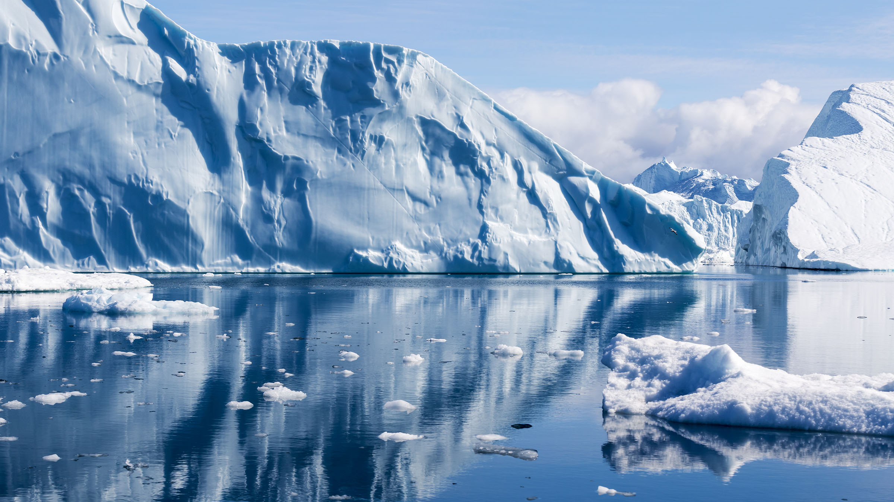
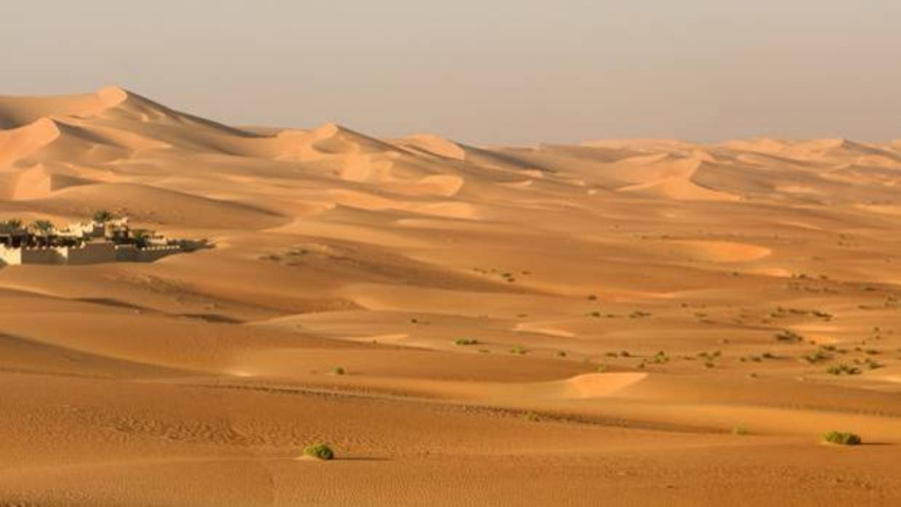
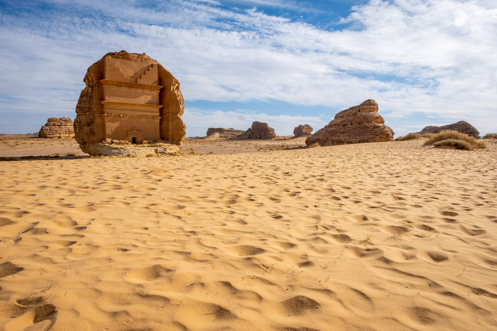
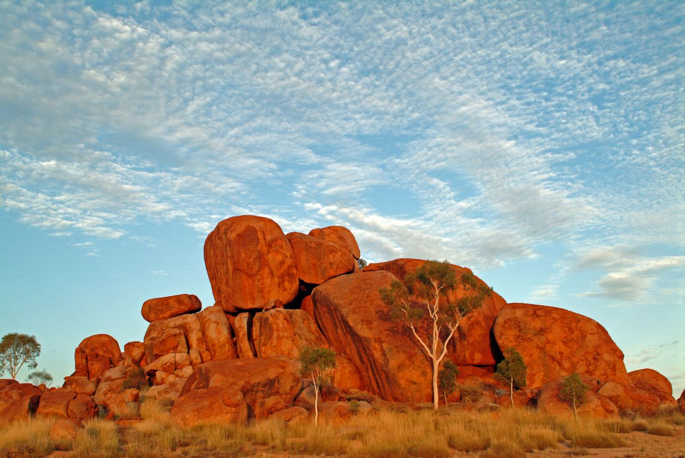
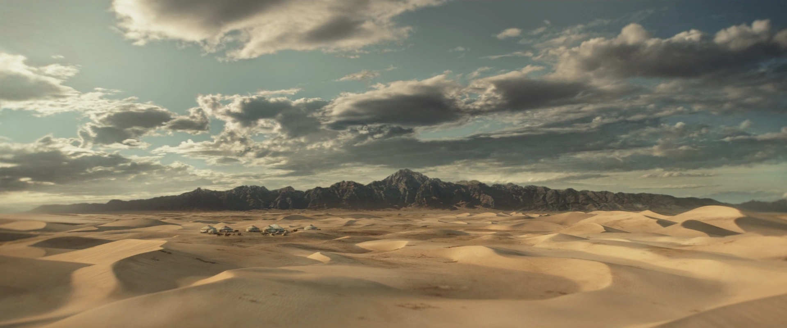
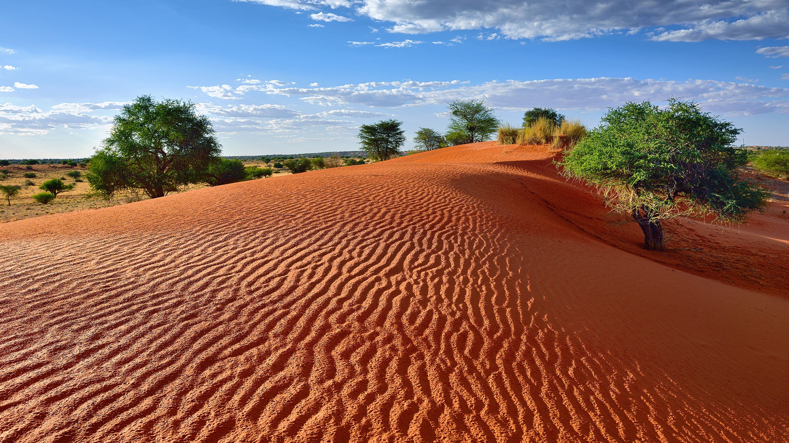
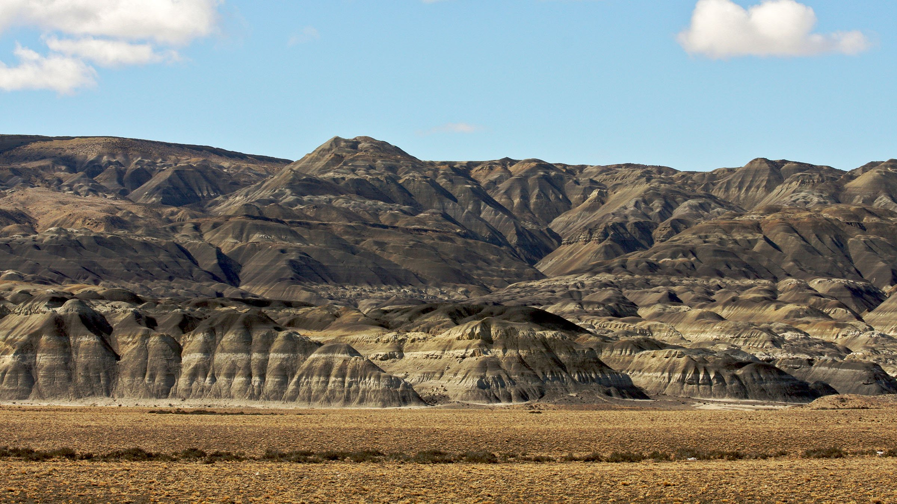
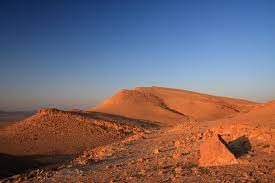
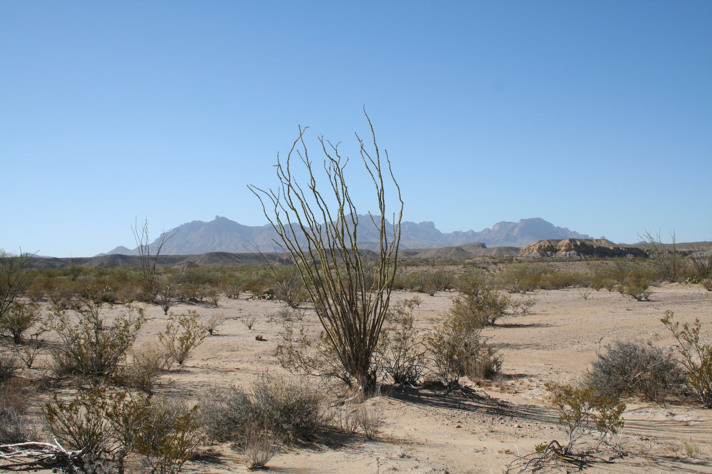
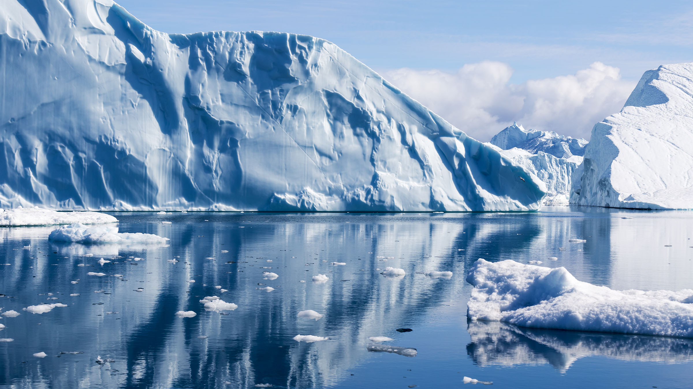
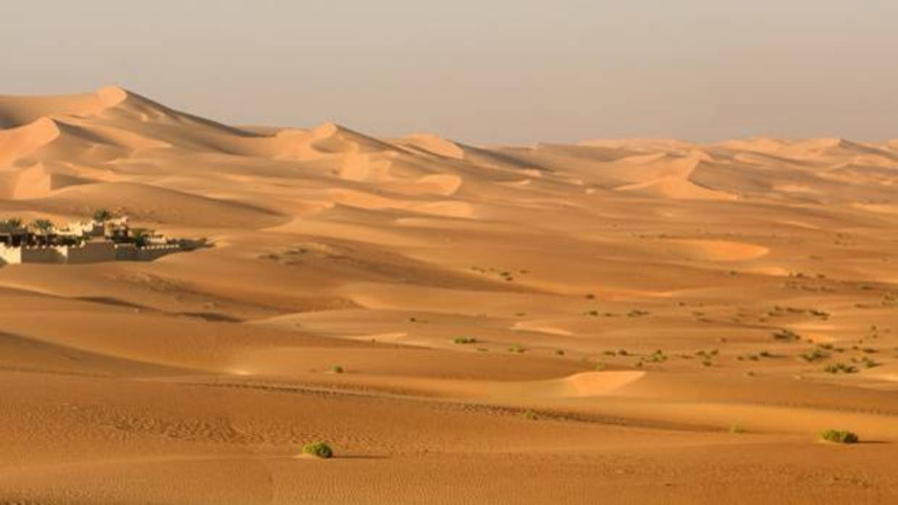
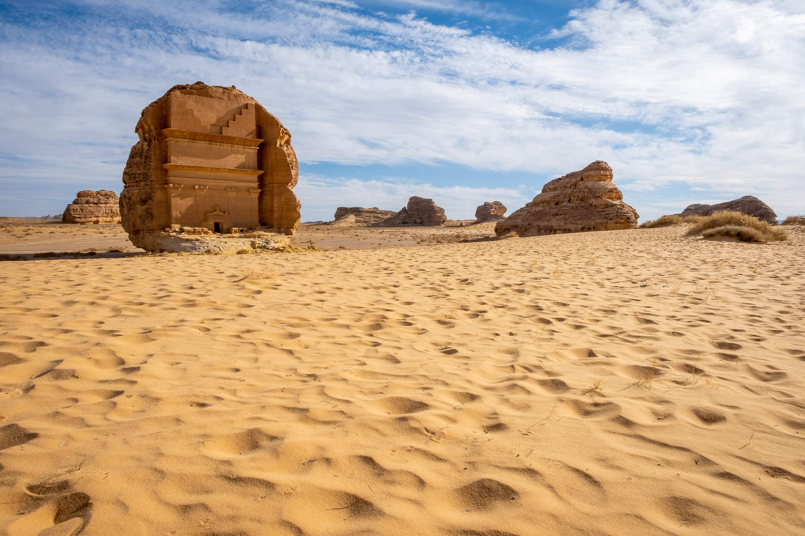
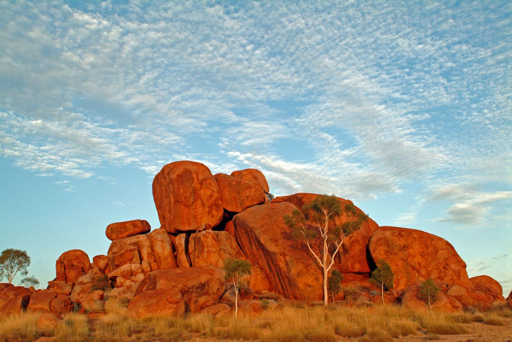
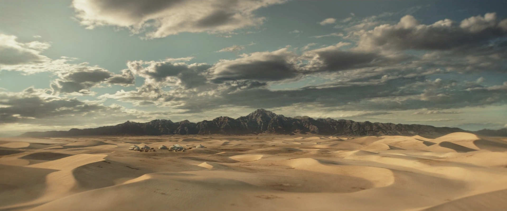
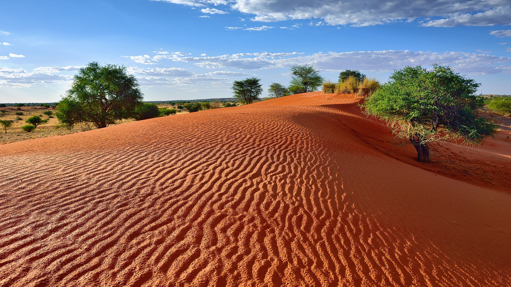
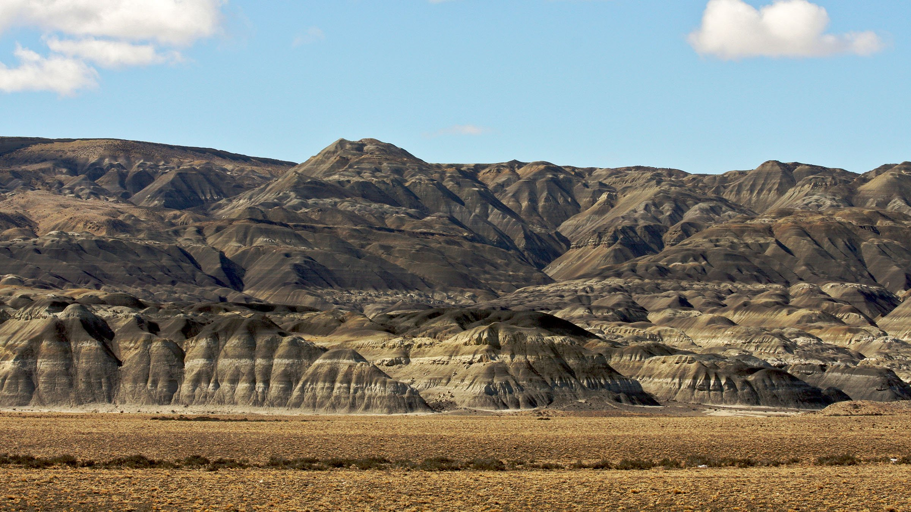
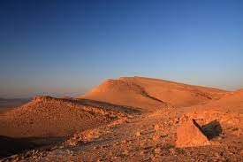
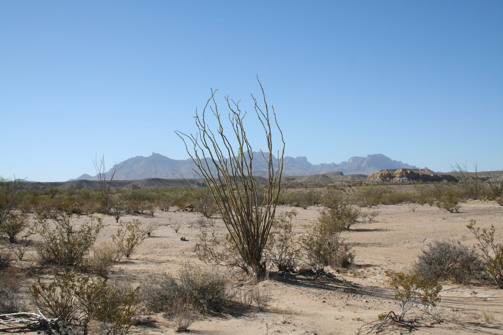
Nombre del alumno | DIW | Sitio Bootstrap